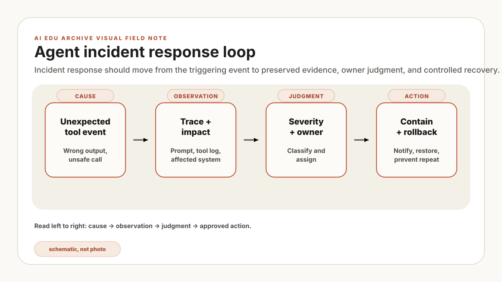

This is a reference runbook for tabletop exercises and site adaptation. The severity labels, response times, incident ID, and system names below are illustrative, not records of a tested plant incident. The site incident commander and system owners must replace them with approved thresholds and contacts.
The first incident artifact is a six-line card: observed behavior, affected route, current plant state, provisional scope, containment owner, and evidence location. Open it before changing prompts, indexes, credentials, or tool policy. This runbook covers detection through closure; approved plant emergency, safety, cybersecurity, privacy, and quality procedures take precedence when their triggers apply.
Scope and roles
Scope includes model responses, retrieval, tool calls, approval workflows, and downstream records created by the agent. It excludes ordinary model-quality defects that are caught in an isolated test environment and cannot reach users or plant systems; record those in the evaluation backlog instead.
| Role | Decision authority | Required record |
|---|---|---|
| Incident commander | Declares severity, coordinates containment, and records readiness for recovery; does not replace domain approval. | Timeline and decision log. |
| AI platform owner | Disables the affected agent, tool route, model, prompt, or index version and verifies the digital boundary. | Configuration snapshot and change record. |
| Process or production owner | Assesses line impact, staffing, queues, and the feasible production plan. | Affected lots, VINs, equipment, queues, or work orders. |
| Quality owner | Authorizes product hold, inspection scope, containment, disposition, and regulatory escalation. | Quality case and affected-product rationale. |
| Controls, maintenance, or safety owner | Authorizes equipment state, approved manual mode, isolation, and restart under site procedures. | Equipment condition, permits, interlock status, and restart checklist. |
| IT/security | Handles identity, data exposure, network, and credential events. | Identity, ACL, and network evidence. |
| Scribe | Preserves timestamps, commands, approvals, and evidence locations. | Immutable incident index. |
What counts as an incident
Report unauthorized retrieval, wrong tool execution, missing approval, stale-source recommendations, fabricated citations, repeated refusal failure, privacy exposure, and user action based on a materially wrong output. Near misses remain reportable even when no plant state changed.
| Level | Illustrative trigger | Initial authority |
|---|---|---|
| SEV-3 | Incorrect answer or draft was contained before use. | Platform owner records and triages. |
| SEV-2 | Wrong ticket, workflow, or recommendation reached an operational queue. | Incident commander disables the affected route and notifies the process owner. |
| SEV-1 | State change, data exposure, safety implication, or confirmed production impact. | Site emergency, security, quality, or production escalation applies immediately. |
Response procedure
- Open and classify: create the incident record, note who detected it, record the observed behavior, and assign a provisional severity.
- Contain the AI route: the AI platform owner revokes the affected tool route, identity, model deployment, or index. If the boundary is uncertain, stop the agent service rather than assuming read-only mode is sufficient.
- Protect product and plant state: production assesses line impact; quality authorizes product hold, inspection, and disposition; the site-authorized controls, maintenance, or safety owner decides equipment isolation, approved manual operation, and restart. Follow emergency and permit procedures without waiting for the AI incident workflow.
- Preserve evidence: snapshot logs and versions before prompt, policy, index, or code changes. Record hashes and access controls for copied artifacts.
- Determine exposure: identify affected users, records, lots, VINs, equipment, and time window. Mark assumptions separately from confirmed scope.
- Communicate: issue one owner-approved instruction describing what to stop using, what to verify manually, and where updates will be posted.
Do not tune prompts, rebuild the index, rotate logs, or replay a state-changing request until the original evidence has been preserved. Credential rotation or emergency containment may proceed when the incident commander records why delay would increase risk.
Evidence preservation
Agent traces need to be designed before incidents happen. A useful trace includes the user role snapshot, policy version, prompt version, model version, retrieved source IDs, tool schema, tool arguments, approval ID, result, and final response. That record turns recollection into a versioned sequence reviewers can challenge.
Illustrative incident record, not terminal output or evidence from an observed event:
{
"incident_id": "AI-SEV2-2026-07-11-004",
"agent": "maintenance_triage_agent",
"mode": "state_changing",
"user_role": "contractor",
"policy_version": "tool-policy-2026-07-01",
"prompt_version": "agent-triage-v12",
"model_version": "local-llm-2026q2",
"retrieved_sources": ["sop://etch/E-17/rev-07"],
"tool_call": {"name": "create_maintenance_ticket", "approval_id": null},
"containment": "tool route disabled"
}Recovery and closure
Recovery requires an owner-approved change, a rollback or compensating-action plan, and a test that reproduces the failure before the fix and passes after it. Candidate actions include excluding superseded sources from active retrieval, correcting permission synchronization, separating read and write tools, or adding approval and idempotency checks. A user confirmation may support review, but it is not sufficient as the corrective control.
A maintenance ticket reaches the wrong module owner after an agent builds it from an illustrative revision 07 SOP. The stale source explains part of the failure, but the trace also has no approval ID; replacing the document alone would leave the write path open. No physical action is assumed. The exercise team disables the route, preserves the trace, excludes revision 07 from active retrieval, adds source-owner and approval tests, and verifies the ticket tool rejects a missing approval. These details are constructed for the runbook exercise.
Replay the illustrative trace against the candidate fix. Pass: the stale source is absent from active results, the write call without approval is rejected, the evidence bundle is complete, and the incident commander plus process, quality, and security owners accept the recorded scope. Stop: keep containment in place when the failure cannot be reproduced, affected records remain unknown, or rollback monitoring has no owner. Limit: a tabletop validates the runbook path under test; it does not demonstrate emergency response, product disposition, or safety-system performance.
Close only when the incident commander confirms that containment remains effective; impact and evidence are documented; affected records or product have an owner-approved disposition; corrective tests pass; residual risk and exceptions have named owners and expiry dates; communications are complete; and the recovery change has a monitored rollback window. Reopen the incident if a closure assumption is disproved. Then return to the takt-aware agent design and feed the tested containment, fallback, and approval requirements back into its manifest.